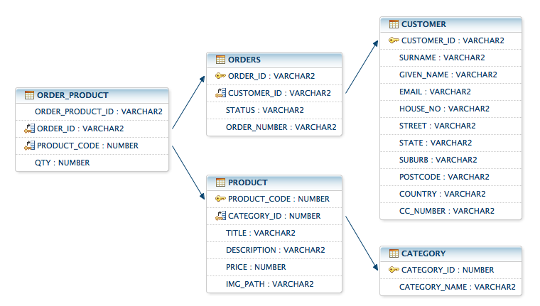
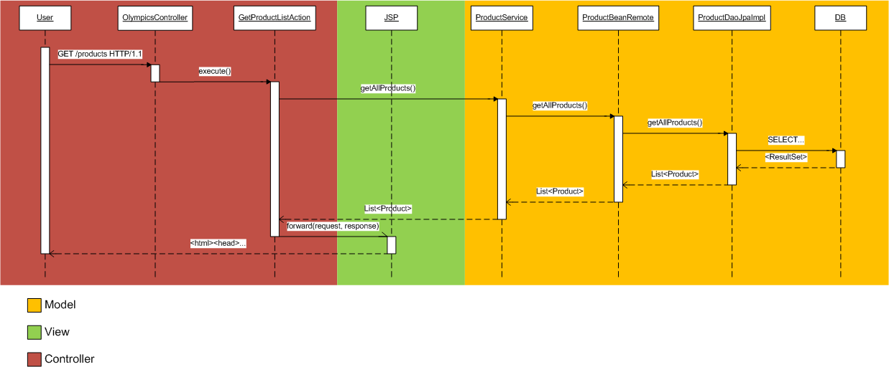

31242 Advanced Internet Programming
Assignment 2: Olympics Shop Enterprise Application
Student Name | Student Number | Responsibility |
William Southers | 10855548 | - Presentation Tier - Frontend interface - Web application |
Sean Spark | 10713980 | - Web service - Web service client |
Patrick Altaie | 10710604 | - Persistence - Business logic - Presentation/business logic integration |
1.3.1 Relaxing WebLogic security rules for the orders user
1.3.2 Setting up the orders and supplier users, and the olympicsadm group
1.3.3 Setting up the Olympics shop data source
1.3.4 Setting up WS-Security for the OrderService user
2.2.2 com.wsp.olympics.service
2.2.4 com.wsp.olympics.repository
2.2.5 com.wsp.olympics.service
2.2.6 com.wsp.olympics.servlet
Aside from the components which make up the web applications, some additional files have also been added
Please note: The scripts provided in the sql/ directory are designed for an Oracle database, and may not work as intended for any other database type. If the DBMS being used is not Oracle, these scripts may need to be rewritten in that DBMS's native syntax.
Because the scripts in the sql/ directory are interdependent, and in order to avoid any errors from the database, they must be executed in this order:
Because this enterprise application uses forms-based authentication to authenticate the orders user, this user will need to be created on the WebLogic side. Before we do that, we will need to disable the default password validator requiring at least one numeric character (because the orders password has no numeric characters):

You will need to configure a data source which points to a schema where the database objects in section 1.2 were set up. This data source must have a JNDI name of jdbc/olympicsShopDataSource. Please see the WebLogic documentation on how to set up a JDBC data source in WebLogic server.
Please note: This section of the steps assumes that the olyEAR module has already been deployed to the domain.
Please note: The supplier application requires the enterprise application to be correctly configured as above
The olySupplier application is a Java Swing application which calls the OrderService web service via JAX-WS using auto-generated web service client stubs.
Please follow these steps to use the client application:
The entity-relationship model for this application is as follows:

The CATEGORY table lists a series of item categories that are displayed on the right hand side of the products page. It is driven by a manually-defined ID (i.e. no sequences are involved. When a new category is added, the user is required to manually define the ID for the new category).
The PRODUCT table lists all products and their corresponding categories. This table contains the standard set of product-related information (e.g. title, description, price) in addition to an absolute path to an image of this particular product. Storing the image in the database somewhat limits the ability for dynamically displaying different images of the same product, but for this relatively simple design this method was chosen for simplicity's sake (for example, the presentation layer need not perform any concatenation of strings in order to build a product image URL).
Like the CATEGORY table, this table does not have any auto-generation of product IDs, which means that retrieving the next available product code is required to be done manually.
The CUSTOMER table is a straightforward repository of customer information. Any customer who completes the checkout process has a unique entry entered into this table. If a customer is returning and submitting a new order, they will have a new entry in the customer table, as the current system does not currently have a concept of user accounts.
When a customer's order is submitted, the ORDERS, CUSTOMER and ORDER_PRODUCT tables are updated. The ORDERS table contains a unique order ID (which is given to the customer for order tracking), a reference to the customer's ID who submitted this order, and a status which can be one of ORDERED, PAID or SENT.
To address the order number requirement (that is to provide an order number in the format “fituseridnnnn” where fituserid is the faculty userid and nnnn is a generated number) a before-insert trigger has been created. This trigger concatenates the current database user (which is the same as the faculty user id) and the sequence number used for the ORDER_ID padded with leading zeroes to make it 4 characters wide. This generated order number is stored in the ORDERS table as the ORDER_NUMBER surrogate key and is used in the application for presentation and order lookup purposes only.
Finally, the ORDER_PRODUCT table is a relationship table which links the order with the products that have been purchased (or are currently in the cart). Effectively this is the model for the shopping cart (i.e. a list of items and an owner).
The persistence component of this application is implemented using OpenJPA with a single persistence unit named “olyJPA.” Transactions are container-managed using JTA.
This package provides the actions that are called upon by the session facade Servlet in the servlet package. These actions include viewing the cart, updating the cart, checking out, etc.
Contains the local and remote EJB interfaces for the various shop-related activities, and their stateless implementations.
Contains the JPA Entity classes, which also act as the domain model for this solution (see section 2.3.1).
This package contains the DAO interfaces for retrieving data from the database, and also their JPA implementations. The interface (e.g. ProductDao) gives a list of operations that the consumer is able to perform on a product or products, and its implementation (e.g. ProductDaoJpaImpl) provides a JPA implementation of performing that particular activity.
Adds another layer of abstraction to the web project. the Service classes instantiate the EJBs via JNDI lookups to do the various pieces of work required by the web frontend. Classes which implement Action call these Service methods to retrieve or store the relevant information.
Implementing the service concept means that the classes which implement Action do not need to change if the underlying way of accessing data (currently EJBs) were to change. If the solution moved to web services, only the Service classes would need to change (provided the domain model and other unrelated entities remain the same)
This package contains the actual Servlets which handle requests and perform controller activities such as redirection and data gathering.
Provides various utilities that are used in more than one location throughout the web application. This could be extended to an olyUtils module if the need arose, but the need for common utilities is currently only existent in the olyWeb project.
Contains the OrderService web service implementation class.
The domain model for this solution is persisted to a relational database, and is mapped to Java objects using JPA technology. In addition to the JPA entity classes providing a medium for data access functionality, they are also used as DTOs. The main reason behind having JPA entities serve a dual purpose include not having to create separate domain model classes (which would need mapping between the JPA entity and its representative POJO). A disadvantage would be that the classes are not true POJOs in that they are annotated with JPA annotations, and that not all data would be required at all times which would create unnecessary overhead.
The DAO pattern is maintained for this solution. Each DAO has a JPA implementation which creates, retrieves, updates and deletes the aforementioned DTOs as appropriate. This solution attempts to implement the inversion of control practice. To that end, the DAOs are not container-managed, and must have an EntityManager injected into them at construction time from their consumer. How the EntityManager itself is instantiated is left up to the consumer of the DAO.
A number of stateless session beans have been implemented, which form the business logic tier for this application. The stateless EJBs use the DAOs mentioned in the previous section to communicate with the underlying domain model. The EntityManager for these DAOs is injected via container-managed dependency injection in the EJB, and instantiates the DAOs after the constructor is called (i.e. after the EntityManager has been injected).
The EJB implementations implement both a local and remote interface. Currently only the remote interface has any methods in it, and only the remote interface is used throughout the application and its consumers. The methods in the remote interface mirror those available at the DAO level.
The shopping cart state is maintained in the HTTP session. The reason for doing this is that as this is an extension of a web-only application, keeping the HTTP session means that there will be less moving parts in the web part of the project, and the backend systems can be pooled more efficiently to service requests in a stateless fashion from the presentation layers.
This web part of this solution uses the Model 2 ("MVC") design pattern. There is a strict separation of concerns between the components which display content (JSP pages, the view), ones which perform orchestration and control the workflow (Servlets and Actions, the controllers), and finally the components which represent the business object model (POJOs, the model). The method of transport for data between the model and controller is the service interface (com.wsp.olympics.service.*), which shields the controller from changes to the way that business data is retrieved. The service interface looks up EJBs via JNDI to perform actions on the domain model.
Below is a UML sequence diagram which shows the use case of retrieving the product list. It shows the interaction between the different components, and a rough delineation of where certain components of the web application lie with regards to the MVC idea:

The OlympicsController session facade receives the request from the client. Based on the action requested by the user, the facade forwards the request to the appropriate Action implementation which will fulfil the request and perform the relevant controller activities (i.e. retrieving data from DAOs, instantiating beans), then forwarding the request to the relevant JSP).
The OrderService is a web service which offers the following operations:
- getPaidOrders: Retrieves a list of shopping carts whose status is “PAID”
- updateOrderStatus: Updates the status of an order to “SENT”
In order to perform these actions the web service implementation looks up the EJBs discussed in section 2.3.2 via JNDI, and uses their methods to carry out the functionality above.
The services are protected by WS-Policy, which requires that the consumer provide a WS-Security UsernameToken. The web service container checks these credentials against the WebLogic identity management system, and authorises the web service user if they are a member of a predetermined list of users who may access this service.
A sample consumer of the web service has been implemented as a Java Swing application named “olySupplier” (please note that this application is not included in the EAR file). This application uses JAX-WS artifacts generated using the wsimport tool in order to call the order service. The Swing frontend then provides the capability to call the two web service operations.